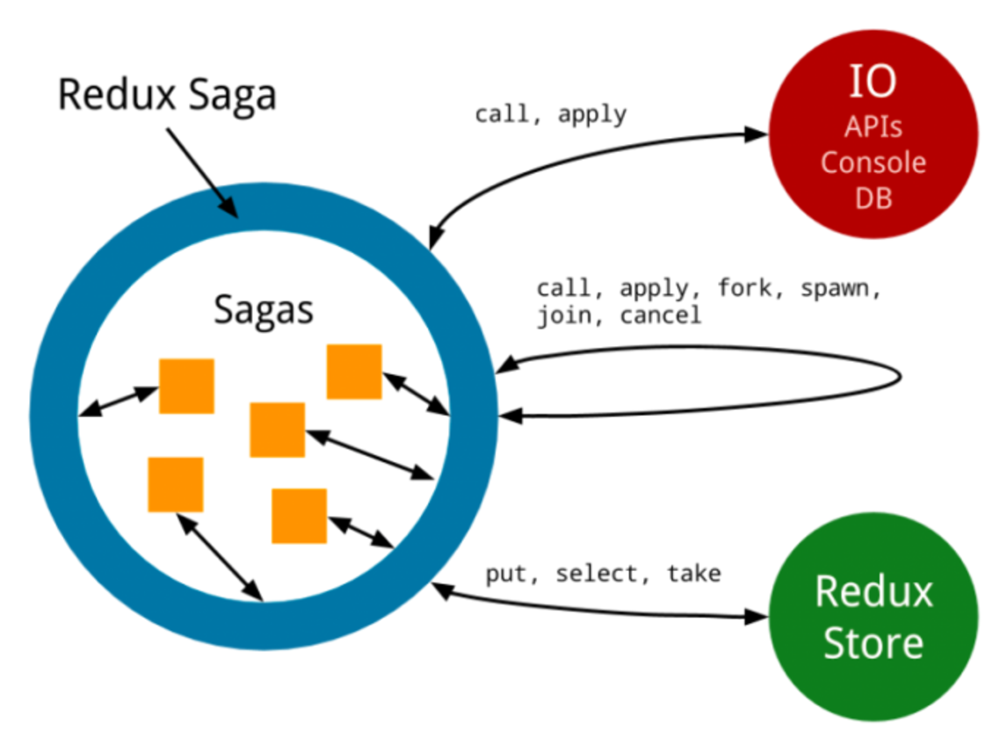
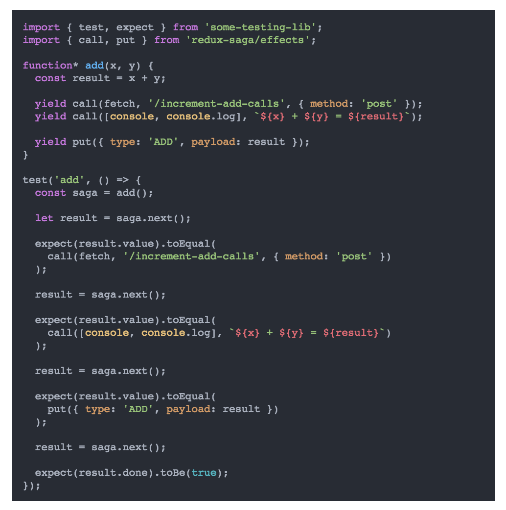

redux-saga: by @solodynamo
What is redux-saga?
- redux-saga is a redux middleware for handling side effects.
- Side-Effects: async operation such as a timer or a HTTP request.
Action Creators or Effects

Benefits : 1. Testing

3. Sagas offer independent place to handle all side effects.